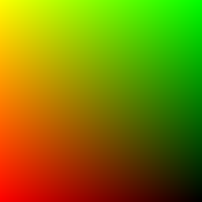
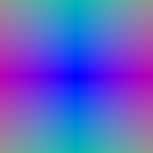
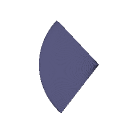
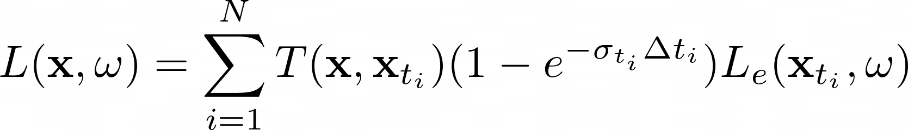
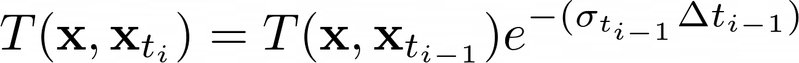
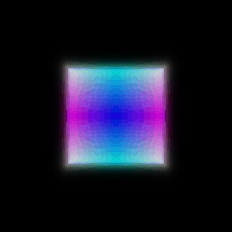
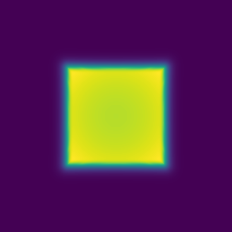
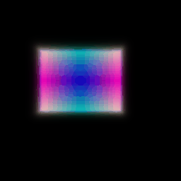
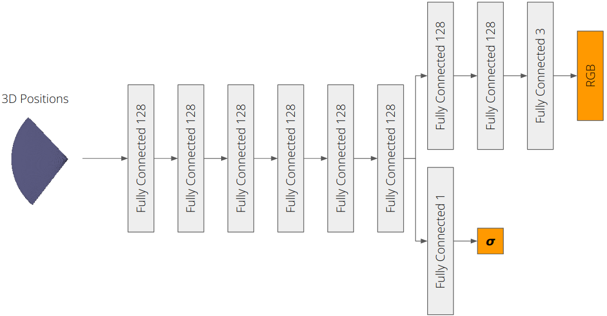
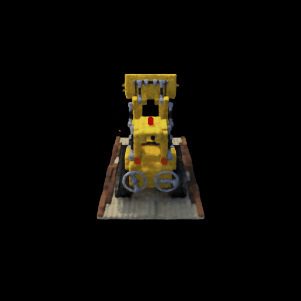

 
## Point sampling The point sampler: 1. Generates a set of distances between a specified minimum and maximum distance 2. Uses these distances to sample points offset from ray origins along ray directions 3. Stores the distances and sample points The following visualization shows point samples from the camera:
## Volume rendering The volume renderer evaluates a volume function at each sample point along a ray, and aggregates these evaluations to perfrom rendering. The implicit volume function takes in as input a ray bundle and outputs a set of density and rgb values for each sample point along each ray. The volume renderer aggregates the density and rgb values to perform rendering using the emission-absorption model, described by the following equation:
where ***sigma*** is the denisity, ***delta_t*** is the length of current ray segment, and ***L_e*** is the color. Transmittance is given by the following equation:
The following visualization on the left shows the result of rendering a box implicit volume function and the right shows the corresponding depth map: 
# Optimizing a basic implicit volume ## Random ray sampling Now that we have a differentiable volume renderer, we can optimize a basic implicit volume function to fit a target image. Depending on how many samples we take for each ray, volume rendering can consume alot of memory on the GPU, hence we sample a subset of rays from a full image for each training iteration. ## Loss and training The loss function used for optimizing the implicit volume function is MSE loss between the rendered image and the target image. ## Visualization The following visualization shows the result of optimizing a basic implicit volume function to fit a target image. The box center and side lengths are: (0.25, 0.25, -0.0005) and (2.005, 1.504, 1.503) respectively.
# Optimizing a Neural Radiance Field (NeRF) We implement an implicit volume as a Multi-Layer Perceptron (MLP). This MLP maps 3D position to volume density and color. Specifically, the MLP takes in 3D positions from a ray bundle to produce color and density for each sample point in the ray bundle. The loss function used for optimizing the NeRF is MSE loss between the rendered image and the target image. This implicit volume is used to optimize the lego scene from a set of RGB images as shown below:The model structure is illustrated below. Each layer is a fully connected layer with ReLU activation. The output layer for density is a fully connected layer with ReLU activation. The output layer for color is a fully connected layer with sigmoid activation.

# High Resolution Imagery We futher trained the NeRF model on a higher resolution image on the same model architecture as before, and the result is shown below. An interesting observation was that we can use the pretrained model to initialize the weights of the new model and the new model can be trained to produce a higher resolution image. The advantage of this approach is that we can reduce the number of training iterations required to produce a high resolution image.